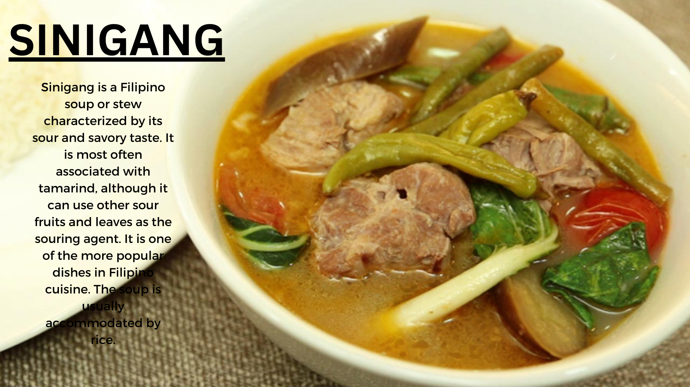

Favorite Foods


Like many cultures based in warm climates, Filipino natives developed various methods of preserving food. Adobo utilizes the acid in the vinegar and the high salt content of soy sauce to produce an undesirable environment for bacteria. Its delicious flavor and preserving qualities served to increase adobo's popularity.
Sinigang is a tamarind-based soup that is known for its sour and savory taste. You can make it with either fish, pork belly, spare ribs or corned beef. My favorite is with pork spare ribs, lots of veggies, and a bed of rice.